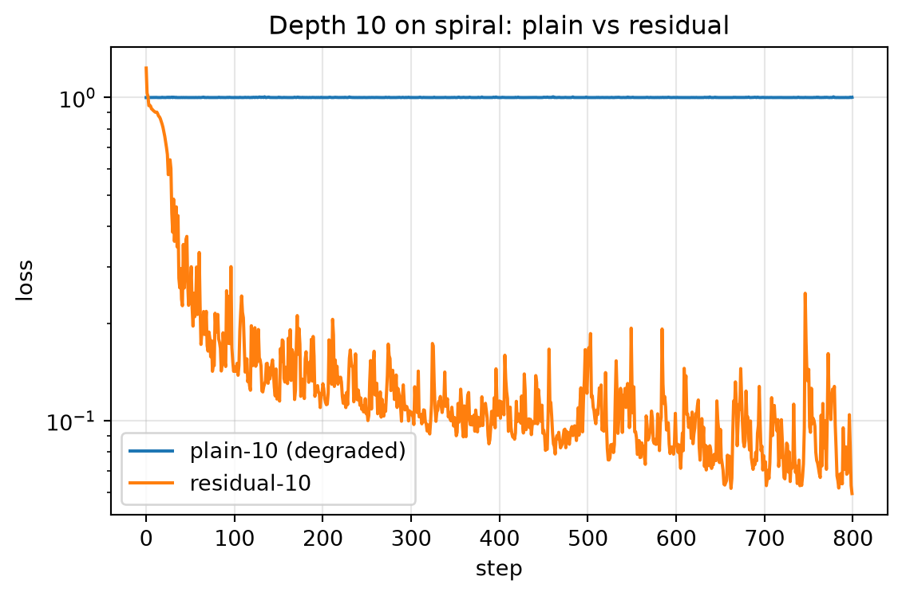

import numpy as np
from dlbook.data import make_spiral
from dlbook.nn.mlp_numpy import MLPNumpy
from dlbook.train import Trainer, accuracy
from dlbook.utils import plot_loss_curves, set_seed
set_seed(42)
Xs, ys = make_spiral(n_per_class=200, seed=0)14 军备竞赛：从 AlexNet 到 ResNet
AlexNet 之后，视觉领域进入五年军备竞赛，主旋律只有一个字：深。ZFNet（2013）调参微胜；VGG（2014）证明”两层 3×3 堆过一层 5×5”，把网络推到 19 层；GoogLeNet（2014）用 1×1 卷积省参数，做到 22 层。然后所有人撞上同一堵墙：再深，训练误差不降反升——注意，是训练误差，连拟合训练集都做不到，这不是过拟合。2015 年，何恺明等人的 ResNet 用一个近乎尴尬的简单改动（给层加一条”跳线”）把网络推到 152 层，横扫当年所有竞赛，深度学习的”深度”二字从此名副其实。本章重演这堵墙与这条跳线。
Tip算力需求
A 级：笔记本 CPU · 全部实验合计约 2 分钟。
- 算力：单机多 GPU 成为竞赛标配；VGG 训练一遍要数周——深度已经是算力的直接兑换；
- 数据：ImageNet 的 120 万图是所有参赛者的公共燃料，竞争的变量只剩架构与训练术；
- 认知：“更深 = 更好”是默认信念（层级组合表达力的直觉），但 20 层上下出现无法解释的平台期；
- 关键事实：残差连接的思想有先声（Highway Networks，2015 年 5 月，Srivastava 与 Schmidhuber——正是 2.2 章那个实验室），但 ResNet（2015 年 12 月）以极致的简洁与工程完成度取胜——简洁是可复制的传播力。
14.1 本章问题
2.2 章埋的伏笔在此回收：BN 解决了深网的训练稳定性，但退化（degradation）问题浮出水面——
- “加深反而更差”到底是什么病？（既然不是过拟合、也不是梯度消失——BN 之后梯度健康了）；
- 一条恒等跳线为什么能治它？
14.2 历史中的尝试（包括弯路）
弯路：把退化当病来治。 2014–2015 年的主流反应是”更深需要更精心的初始化与训练术”——沿 2.1 的思路加码。方向没错但量级不够：退化不是调参问题。
诊断（ResNet 论文的第一张图）：He 等人在论文开头放出了那张著名的图——56 层普通网络的训练误差高于 20 层。他们排除了过拟合（训练误差也差）与梯度消失（BN 保证了梯度健康），剩下的假设石破天惊：让一堆非线性层去拟合恒等映射，本身竟然是困难的。深层普通网络在优化上”绕路”——它有能力表示解，却不容易走到那里。
药方：既然”什么都不做”很难学，那就把”什么都不做”设计成默认——让每几个层去学残差 \(F(x) = H(x) - x\)，输出 \(y = F(x) + x\)。要学恒等映射，只需把 \(F\) 推向零（权重衰减天然偏爱小权重！）——把”难以学习的默认”变成”容易被正则偏爱”的默认。
后续的理解：Veit et al. (2016) 提出残差网络的”隐式集成”观——\(L\) 个残差块的组合展开后是 \(2^L\) 条路径的集合，删除单个块对网络的伤害远小于预期。无论哪种解释更对，“给梯度修一条不经过连乘的恒等高速路”（2.2 的原话）都是最硬核的那一条：\(\partial y/\partial x = 1 + \partial F/\partial x\)，那个 +1 让梯度永远有一条不衰减的回家路。
你将做深度扫描实验：普通 vs 残差网络，深度 {2, 5, 10}。运行之前写下三个预测：
- 普通网络（relu + 缩放初始化，无 BN）在三个深度上的成绩走势——单调变好、饱和、还是先好后坏？
- 残差版（其余全同，只加跳线）会怎样？
- 最深的一组，两者的差距会有多大？
再回答一个设计题：残差块的加法 \(y = F(x) + x\) 要求 \(F(x)\) 与 \(x\) 维度相同——如果层与层宽度不同，工程师该怎么改跳线？（真实 ResNet 在换维度处用 1×1 卷积投影——你能否想出这个答案？）
写完再运行。
14.3 核心思想
退化是优化病，不是表达病。普通深网”能表示”与”能学到”之间的鸿沟，本质是参数化的不友好：把期望函数参数化为一长串非线性复合，恒等映射（常常是不错的中间解）在这个参数化下反而处于别扭的位置。残差参数化移动了这组曲面——同样的函数空间，不同的坐标系，优化难度天差地别。这是全书第一次出现”参数化本身影响可学性”的明确案例（1.6 的”存在 ≠ 可寻”在这里拿到第二个、也是更微妙的注脚）。
恒等路径的梯度高速路。2.2 章说深度 = 连乘，残差把连乘改写成”连乘 + 旁路”：
\[x_{l+1} = F(x_l) + x_l \quad\Rightarrow\quad \frac{\partial x_{l+1}}{\partial x_l} = \frac{\partial F}{\partial x_l} + I\]
从深层回传到浅层的梯度是所有旁路的和——即使每条 \(F\) 路径都衰减，恒等路保证了信号不灭。ResNet 之后的几乎一切深架构都内置这条高速路：Transformer 的残差流（5.2）、U-Net 的跳连、扩散模型的噪声预测块——它是深度学习骨骼级别的发明。
14.4 从零实现
MLPNumpy 的 residual=True 开关即残差版（宽度相同的隐藏层之间加恒等跳线）。数据仍是那条 1.75 圈的螺旋——它已见证过 2.2 的卡死与 2.3 的 BN 复活，现在见证第三次判决：
深度扫描：普通 vs 残差。
results = {}
for depth in (2, 5, 10):
m = MLPNumpy(2, [32] * depth + [1], activation="relu", seed=0, residual=False)
h = Trainer(m, lr=0.01, momentum=0.9, batch_size=64, seed=0).fit(Xs, ys, 800)
results[f"plain depth={depth}"] = accuracy(m, Xs, ys)
print(f"plain depth={depth:2d}: acc={results[f'plain depth={depth}']:.3f}")
m = MLPNumpy(2, [32] * 10 + [1], activation="relu", seed=0, residual=True)
h = Trainer(m, lr=0.01, momentum=0.9, batch_size=64, seed=0).fit(Xs, ys, 800)
results["residual depth=10"] = accuracy(m, Xs, ys)
print(f"residual depth=10: acc={results['residual depth=10']:.3f}")plain depth= 2: acc=0.965
plain depth= 5: acc=0.970
plain depth=10: acc=0.500
residual depth=10: acc=0.978典型读数：普通网络 0.97 / 0.97 / 0.50——深度 10 崩溃，训练彻底失败（退化病的复刻）；残差版在同样深度爬到 0.97+。把两者的训练曲线放在一起看发病过程：
histories = {}
for tag, res in (("plain-10 (degraded)", False), ("residual-10", True)):
m = MLPNumpy(2, [32] * 10 + [1], activation="relu", seed=0, residual=res)
histories[tag] = Trainer(m, lr=0.01, momentum=0.9, batch_size=64, seed=0).fit(Xs, ys, 800)["loss"]
plot_loss_curves(histories, title="Depth 10 on spiral: plain vs residual");
普通版的 loss 贴地爬行——梯度有、方向也有，就是走不动；残差版畅通。一条跳线，生死之别。
诚实脚注：把残差网继续推到 20 层，我们这个玩具引擎（朴素初始化、无逐块 BN、无学习率日程）会发散到 NaN——残差不是免死金牌，He 的原配方里 BN 与残差是并用的。这与 2.5 的结论同构：零件的价值在配方中体现。真实 ResNet 的 152 层 = 残差 + BN + 仔细的初始化与日程，缺一不可。
14.5 消融实验
跳线放到多深才划算？ 浅网加残差几乎无差别（2 层时 \(F(x)+x\) 与 \(F(x)\) 的差距微乎其微）：
for depth in (2, 5):
for res in (False, True):
m = MLPNumpy(2, [32] * depth + [1], activation="relu", seed=0, residual=res)
h = Trainer(m, lr=0.01, momentum=0.9, batch_size=64, seed=0).fit(Xs, ys, 800)
tag = "residual" if res else "plain"
print(f"{tag:>8} depth={depth}: acc={accuracy(m, Xs, ys):.3f}") plain depth=2: acc=0.965
residual depth=2: acc=0.958
plain depth=5: acc=0.970
residual depth=5: acc=0.973浅层时两者持平（残差既不帮倒忙也不帮忙——恒等路冗余），深层的差距才是残差的全部意义。架构创新的价值要放在”让它生效的尺度”上衡量——这也是为什么军备竞赛时代的论文必须报深度消融。
14.6 本章 Loss 账本
| 问题 | 回答 |
|---|---|
| 在优化什么 loss？ | 还是那个 MSE——残差改变的是参数化的坐标系，不是目标 |
| 数据从哪来？ | 螺旋（第三次出场）；历史上是 ImageNet |
| 买到了什么能力？ | 深度的可扩展性：152 层可训；特征层级的层数上限被打开 |
| 没买到什么？ | 本任务上 10 层残差与 5 层普通相当——残差买的是”更深的可能性”，不是”更准的必然”；宽度、数据与任务复杂度仍是最终瓶颈 |
- 残差流（residual stream）→ Transformer 的主干设计（5.2）：每个注意力/前馈块都往一条恒等流上”写增量”——今天的可解释性研究直接沿这条流追踪信息（卷三）；
- “把默认设为易学的恒等” → 门控与快捷路径的普遍哲学（LSTM 的细胞状态 4.3、Highway 层、DenseNet）；
- 隐式集成观 → 大模型的路由与稀疏激活（MoE，6.4）在”多条路径的集合”意义上是亲戚；
- 零初始化残差分支的训练技巧 → 今天扩散模型与深 Transformer 的标准初始化选项之一。
He, K., Zhang, X., Ren, S. & Sun, J. (2015). Deep residual learning for image recognition. arXiv:1512.03385 / CVPR 2016.
- 读什么：图 1（退化问题的原始证据——训练误差对比）、图 4（残差块）、图 6（56 层普通 vs 残差的训练曲线）；
- 跳过：表格里的竞赛细节；
- 历史注：配套读 Veit et al. (2016) Residual networks behave like ensembles of relatively shallow networks——对同一现象的第二种理解。两读并置你会体会：重要的发明先有实效、后有多重解释（2.3 的 BN 剧本重演）。另注意 Highway Networks（2015 年早些时候）的先声——但它在 6.1 里我们还会遇见 Schmidhuber 这个名字。
14.7 遗留问题
- 深度打开之后，学到的层级特征到底是什么？能否整个搬给别的任务？（→ 3.3：预训练-微调范式——卷积时代留给 LLM 时代最重要的遗产）；
- 图像之外：卷积的固定窗口在序列上的极限在哪？（→ 3.4）。
14.8 练习
- 造轮子：给
MLPNumpy的残差加法换成缩放残差 \(y = F(x)\cdot\alpha + x\)（\(\alpha=0.1\)），在深度 20 上测试稳定性是否改善——并解释为什么缩放能救我们的 20 层 NaN。 - 预测再运行：残差版在深度 2 与深度 10 的收敛速度（到达 0.95 准确率所需 epoch）哪个更快？先猜再量。
- 消融：把残差加法放在激活之前（\(y = \mathrm{relu}(F(x)+x)\)，即”标准 ResNet v1 布局”）与之后，训练动态有差别吗？我们的引擎用的是哪种？
- 论文映射：用四问账本拆 He et al. 2015——注意第一问的答案与 2.2 章（诊断章）的结构差异：它同时是诊断与药方。
- 进阶：实现 Veit 的”路径删除”实验——训练一个 10 层残差网后，随机把某层 \(F\) 置零（只留恒等路），测准确率掉多少；对普通网做同样的事会怎样？
Note练习答案
练习 1：缩放把 \(F\) 路径的初始贡献压小，网络起步接近恒等（“生而保守”），梯度积累导致的发散被抑制；深度 20 大概率可训。这正是”零初始化残差分支”思想的量级版。
练习 3：我们用的是”激活后相加”（\(y = \mathrm{act}(F)+x\) 的变体）。标准 ResNet 是先加后激活；后者的恒等路也要过 relu，“纯恒等”被破坏（Pre-Act ResNet 因此改为全程 pre-activation）。差别在深网络中显著，浅网络中难辨。
练习 5 提示：残差网删除单块只损失一两条路径（准确率微降）；普通网删除单层等于切断唯一的信号路（瘫痪）——这个不对称就是”隐式集成”观最直观的证据形态。